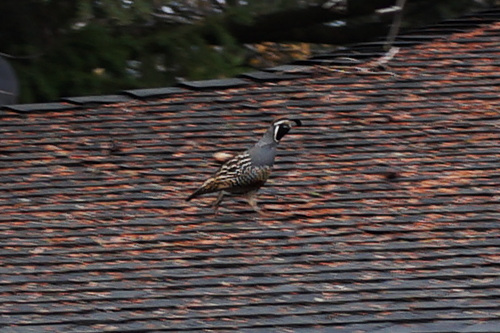

I woke up to some clucking outside my bedroom window this morning. The familiar sound of... quail!! I hopped out of bed and looked out the window, but I was too short to see anything. So I hopped on the bed and looked and saw 4 outside!!
I got up and grabbed my camera without my SD card, took a few shots, realized my issue, ran back inside and got my SD card, and took more. There had to be at least 20 out there! They were so jumpy that it was hard to get photos. They took off as soon as they saw me!
These little guys can hang out at my house anytime.